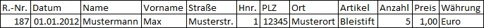

Was ist SQL?
SQL ist eine Datenbanksprache zur Definition von Datenstrukturen in relationalen Datenbanken sowie zum Bearbeiten (Einfügen, Verändern, Löschen) und Abfragen von darauf basierenden Datenbeständen.
Relationale Datenbanken
Eine relationale Datenbank kann man sich als eine Sammlung von Tabellen (den Relationen) vorstellen, in welchen Datensätze abgespeichert sind. Jede Zeile (Tupel) in einer Tabelle ist ein Datensatz (record). Jedes Tupel besteht aus einer Reihe von Attributwerten (Attribute = Eigenschaften), den Spalten der Tabelle.

Modelieren
Ein Datenbank-Modell ist für die Strukturierung einer Datenbank zuständig. Durch diese Strukturierung kann man die Verknüpfungen der Tabellen sowie die Verbindungen zwischen den Daten übersichtlicher darstellen. Um dies tun zu können, werden Tabellen genutzt.Das Endresultat dieses Vorgangs wird "Relationale Datenbank" genannt.

Primary Key
Foreign Key
Normalisieren
Erste Normalform
Die Erste Normalform wird für die Verringerung der Datensätze genutzt. Genauer gesagt: Es dient dazu, mehrere Einträge in einem Datensatz zu entfernen und sie schlussendlich in einen neuen Datensatz zu tun.

Zweite Normalform
Ein Relationstyp (Tabelle) befindet sich genau dann in der zweiten Normalform (2NF), wenn er sich in der ersten Normalform (1NF) befindet und jedes Nichtschlüsselattribut von jedem Schlüsselkandidaten voll funktional abhängig ist.

Dritte Normalform
Die dritte Normalform wird für die Verfeinerung der relationalen Datenbank genutzt. Damit werden die Bezüge der Primary- sowie Foreign-Keys klargestellt und Spalten, welche weiterhin nicht passen, werden in eine eigene Tabelle platziert.

Datentypen
| Datentyp | Speicherplatz | Optionen | Beschreibung |
|---|---|---|---|
| TINYINT |
1 Byte | [(M)] [U] [Z] | Ganzzahlen von 0 bis 255 oder von -128 bis 127. |
| SMALLINT | 2 Bytes | [(M)] [U] [Z] | Ganzzahlen von 0 bis 65.535 oder von -32.768 bis 32.767. |
| MEDIUMINT | 3 Bytes | [(M)] [U] [Z] | Ganzzahlen von 0 bis 16.777.215 oder von -8.388.608 bis 8.388.607. |
| INT | 4 Bytes | [(M)] [U] [Z] | Ganzzahlen von 0 bis ~4,3 Mill. oder von -2.147.483.648 bis 2.147.483.647. |
| INTEGER | 4 Bytes | [(M)] [U] [Z] | Alias für INT. |
| BIGINT | 8 Bytes | [(M)] [U] [Z] | Ganzzahlen von 0 bis 2^64-1 oder von -(2^63) bis (2^63)-1. |
| FLOAT | 4 Bytes | [(M,D)] [U] [Z] | Fließkommazahl mit Vorzeichen. Wertebereich von -(3,402823466×1038) bis -(1,175494351×10-38), 0 und 1,175494351×10-38 bis 3,402823466×1038. |
| DOUBLE | 8 Bytes | [(M,D)] [U] [Z] | Fließkommazahl mit Vorzeichen. Wertebereich von -(1,79769×10308) bis -(2.22507×10-308), 0 und 2.22507×10-308bis 1,79769×10308 |
| REAL | 8 Bytes | [(M,D)] [U] [Z] | Alias für DOUBLE. |
| DECIMAL | M+x Bytes | [(M,D)] [U] [Z] | Fließkommazahl mit Vorzeichen. Speicherbedarf: x=1 wenn D=0, sonst x=2. Ab MySQL 5.1 binär gespeichert, zuvor als String. |
| NUMERIC | M+x Bytes | [(M,D)] [U] [Z] | Alias für DECIMAL. |
| DATE | 3 Bytes | - | Datum im Format 'YYYY-MM-DD'. Wertebereich von 01.01.1000 bis 31.12.9999. |
| DATETIME | 8 Bytes | - | Datumsangabe im Format 'YYYY-MM-DD hh:mm:ss'. Wertebereich entspricht DATE. |
| TIMESTAMP | 4 Bytes | - | Zeitstempel. Wertebereich: 1.1.1970 bis 19.01.2038. Das Format variiert in den MySQL-Versionen. |
| TIME | 3 Bytes | - | Zeit zwischen -838:59:59 und 839:59:59. Ausgabe: hh:mm:ss. |
| YEAR | 1 Byte | [(2|4)] | Jahr zwischen 1901 bis 2155 bei (4) und zwischen 1970 bis 2069 bei (2). |
| CHAR | M Byte(s) | (M) [BINARY] | Zeichenkette fester Länge M. Wertebereich für M: 0 bis 255. |
| VARCHAR | L+1 Bytes | (M) [BINARY] | Zeichenkette variabler Länge, Maximum ist M. Wertebereich für M: 0 bis 255. |
| BINARY | M Bytes | (M) | Zum Speichern binärer Strings, unabhängig vom Zeichensatz. Wertebereich für M: 0 bis 255. Weiterer Typ: VARBINARY |
| BLOB | L+2 Bytes | (M) | Binäres Objekt mit variablen Daten. Weitere Typen: TINYBLOB, MEDIUMBLOB und LONGBLOB. M ist ab Version 4.1 definierbar. |
| TEXT | L+2 Bytes | (M) | Wie BLOB. Ignoriert beim Sortieren & Vergleichen Groß- und Kleinschreibung. Weitere Typen: TINYTEXT, MEDIUMTEXT, LONGTEXT. M ist ab Version 4.1 definierbar. |
| ENUM | 1 oder 2 Bytes | ('val1', 'val2', ...) | Liste von Werten (val1, val2, ...). 65.535 eineindeutige Elemente sind maximal möglich. |
| SET | x Bytes | ('val1', 'val2', ...) | String-Objekt mit verschiedenen Variablen. 64 sind maximal möglich. Speicherbedarf: x ist 1, 2, 3, 4 oder 8. |
Data Definition Language (DDL)
Die "Data Definition Language wird verwendet, um die Struktur einer Datenbank aufzubauen und richtig zu definieren". Damit ist das Erstellen,Bearbeiten und weiteres einer Datenbank gemeint.
Datenbank erstellen
Eine Datenbank kann mit dem Befehl "create" erstellt werden. "Database" steht für die Datenbank. Danach folgt noch der Name der Datenbank. Am Schluss schliesst man den Befehl mit einem ";" ab.
Mit "show databases;" können alle Datenbanken angezeigt werden. Dabei wird nur der Name aller Datenbanken ausgegeben. Somit kann man überprüfen, ob die Datenbank erfolgreich und nach der Bedürfniss erstellt wurde.

Datenbank löschen
Eine Datenbank kann mit dem Befehl "drop" koplett entfernt werden (gelöscht werden).
Syntax:
drop database db-name;
Veranschaulichung:
Tabelle erstellen
Um eine Tabelle erstellen zu können, muss die Datenbank, in welcher dann die Tabelle erstellt werden soll, ausgewählt werden. Mit "use Datenbank-Name;" kann man dies anrichten. Mit dem Befehl "describe" kann der Aufbau einer Tabelle angezeigt werden. Hier können alle Primary Keys, Foreign Keys,Spalten und weiteres aufgerufen werden.

Tabelle löschen
Eine Tabelle kann sowie bei der Datenbank mit dem Befehl "drop" koplett entfernt werden (gelöscht werden). Hier gillt allerdings zu achten, dass die Datenbank aktiv ist: "use db-name;".
Syntax:
drop table tb-name;
Veranschaulichung:
Ändern von Tabellen
Eine Tabelle ändert man mit dem Befehl "alter table". Sobald dies eingegeben wurde, folgen Tabellenname und Funktion danach. Mit "add" kann zum Beispiel ein Datensatz oder eine Spalte hinzugefügt werden. Mit "drop" kann zum Beispiel ein Foreign Key oder ein Primary Key entfernt werden. Mit "change" kann ein/eine Attribut (Spalte) bearbeitet werden.


add & drop
Data Control Language (DCL)
Die Data Control Language spielt eine sehr grosse Rolle in einem grossen Unternehmen. Wegen vielen Mitarbeitern kann es zu verschiedenen Zugriffsproblemen auf Dateien zugreifen und die Daten wären zudem von Diebstahl ungeschützt. Darum gibt es die Befehle "grant" und "revoke".
Benutzer erstellen und Rechte vergeben
Benutzer können mit dem Befehl "create user" erstellt werden. Wenn aber Benutzer erstellt und Rechte
gleichzeitig vergeben werden wollen, dann muss
der Befehl "grant" genutzt werden. Falls man auch noch will das der User, welchem die Rechte vom Admin
vergeben wurden, auch Rechte anderen Usern
vergeben kann, muss am Schluss nach dem Passwort (identified by...) "with grant option" stehen.
"Grant" setzt sich folgendermassen zusammen:
grant on dbname.tabelle to "user@localhost" identified by "Passwort";
Beispiel:
Der User "kurator" hat das Passwort "iLuvArt!". Er hat alle Rechte für die Datenbank "dbwerkstatt1" und kann Rechte anderen Usern vergeben.
grant all on dbwerkstatt1.* to kurator@localhost identified by 'iLuvArt!' with grant option;
Veranschaulichung:
Rechte entziehen
Um Rechte von Usern zu entfernen nutzt man den Befehl "revoke". Der Unterschied beim Syntax zwischen "grant" und "revoke" liegt beim definieren, wo die Änderungen stattfinden sollen. Es geht um das "to" bei "grant". Bei "revoke" muss logischerweise "from" stehen.
Beispiel:
Der User "kurator" soll gar keine Rechte mehr für die Datenbank "dbwerkstatt1" haben, hinzu soll er auch keine Rechte anderen Usern vergeben können.
revoke all,grant option on dbwerkstatt1.* from kurator@localhost;
Veranschaulichung:
Data Query Language (DQL)
Die "Data Query Language" wird für den Informationsabruf von Datenbanken genutzt. Hierbei wird grundsätzlich der Befehl "select" verwendet. Danach wird mit "from Tabellenname" gesagt, woher die Daten hergeholt werden sollen. Nachdem folgt je nach Bedarf die Bedingung ("where"),die Gruppierung ("group by") weitere Bedingungen ("having") oder auch noch die Ordnung ("order by").
Ein Attribut aus Tabelle selektieren
Um eine Spalte aus einer Tabelle auslesen zu können, muss der Befehl "select" dafür genutzt werden. Nach "select" kommen die Spalten, welche ausgelesen werden sollen. Als aller letztes gibt man mit "from Tabellenname" den Ort der Spalte an, so weis das System, woher es die Daten holen soll.
Ohne Duplikate selektieren
Wenn in einer Datenbank (Tabelle) sehr viele Kunden eingetragen sind, welche sehr viele Bestellungen haben, jedoch davon nur diejenigen selektieren möchte, welche nicht die gleichen Produkte bestellt haben, muss "distinct" dafür verwendet werden.
Beispiel:
Nach Bedingung suchen
Um bestimmte Spalten, welche bestimmte Eigenschaften beinhalten, auszulesen, muss der Befehl "where" verwendet werden. Danach folgt ein Operationszeichen (=,<,>) mit welchem wir die Ausgangslage der Bedingung bestimmen. Nach dem Operationszeichen folgt der Wert der Bedingung. Wenn es um eine Zahl geht, können die Anführungszeichen ("") weggelassen werden. Wenn es aber um Buchstaben geht, müssen diese Anführungszeichen beibehalten werden.
In Tabelle gruppieren
Die Funktion "group by" ist ein wenig komplex anzuwenden. Um sie nutzen zu können, muss eine zusätzliche Funktion genutzt werden.
Beispiel:
Abfrage nach quantity > 70 gruppiert nach "product_id"
select sum(quantity) from inventory_transactions group by product_id having sum(quantity) >= 70;

Weitere Bedingung "having"
Diese Erweiterung ist eine selbständige Klausel des SELECT-Befehls und hat eigentlich nichts mit der GROUP BY-Klausel zu tun. Sie ist eine Ergänzung zu den Aggregatfunktionen, wird deshalb überwiegend bei Gruppierungen verwendet und folgt ggf. direkt danach. Dieser Befehl dient dazu, nicht alle Ergebnisse der Auswahl in die Ausgabe zu übernehmen, sondern nur diejenigen, die den zusätzlichen Bedingungen entsprechen. Im folgenden Beispiel (vergleiche oben unter „Gruppierung bei einer Tabelle“) wird festgestellt, an welchen Orten sich genau eine Abteilung befindet.
Beispiel:
SELECT Ort, COUNT(*) AS Anzahl FROM Abteilung GROUP BY Ort HAVING COUNT(*) = 1 ORDER BY Ort;
In Tabelle sortieren
Sortierungen sind für die Übersicht einer Abfrage sehr hilfreich. Zusätzlich können Sortierungen für eine Zeiteinsparung sorgen. Hierfür wird die Funktion "order by" verwendet. Nach "order by" folgt ein "=" Zeichen. Der Wert folgt als aller letztes. Dies ist dann verantwortlich für die Sortierung. Häufig wird nach Werten und Spalten sortiert. Zum einen kann nach Preisen, Zahlen usw. sortiert werden, zum anderen nach Wörtern, wichtigen Kürzeln usw.
Data Manipulation Language (DML)
Die "Data Manipulation Language" wird grundsätzlich wie im Deutschen verstanden, dabei orientert man sich an das Wort "Manipulation" Damit ist das manipulieren bzw. verändern oder bearbeiten der Datei gemeint. In einem Unternehmen, welches viele Kunden hat und welche auch standardmässig viel Produkte bei dem Unternehmen kauft, könnte es zu sehr grossen Problemen führen. Man verliert sehr schnell den Überblick und kann den Gewinn sowie viel andere Faktoren nicht auswerten. Deswegen wird mit vielen Befehlen wie zum Beispiel "insert into" Datensätze in eine Tabelle eingefügt, sodass auch die Information an das Unternehmen ankommt, dass Kunden Produkte vom Unternehmen gekauft hatte.
Werte einfügen
Um Datensätze einfügen zu können, muss der Befehl "insert into" genutzt werden. Danach muss bei "values" eingegeben werden, welche Werte in den Datensätzen stehen sollen.
Erstes Beispiel:
Fügen sie in die Tabelle der Mitarbeiterprivilegien (priviliges) die zusätzliche Position "Fitness" in die entsprechende Tabelle ein und geben Sie dabei die Zielspalten an.
insert into privileges (privilege_name) values ('Fitness');
Bestehende Datensätze bearbeiten
Mit dem "update"-statement können Werte in einer Tabelle (Datensätze) bearbeitet werden. Der Syntax dieses statements sieht folgendermassen aus: Dieses statement kann bei Kunden, welche ständig Produkte kaufen und Rückerstattungen für diese Produkte anfordern, sehr nützlich sein. Mit der Bedingung "where" kann man genau die Daten der Kunden ändern, welche zum Beispiel an diesem oder jenen Datum ein Produkt bestellt haben.
Eigenes Beispiel:
Erhöhen sie die Preise der Produkte (standard_cost & list_price) um 5,5% und runden Sie die Erhöhung dabei auf ganze Euro. Machen Sie dies jedoch lediglich für Produkte, dessen Listenpreis 10 CHF oder günstiger ist.
update products set list_price = round(list_price * 1.055) ,standard_cost = round(standard_cost * 1.055) where list_price <= 10;
Veranschaulichung:
Bulk Load
Mit Bulk Load können Daten aus anderen Tabellen in die gewünschte Tabelle importiert werden. Hierfür verwendet man den Befehl "load data local infile". Dabei muss auf die Trennung der Spalten, woher die Daten geholt werden und wohin die importiert werden sollen, besonderst achten. Das "local" steht für lokal und muss genutzt werden, sonst funktioniert der Bulk Load nicht.
Beispiel:
Die Daten aus der Datei: "bulkload_kunst.csv" soll in eine Temporäre Tabelle importiert werden. Von der temporären Tabelle soll die Spalte "Genre" in die korrekte Tabelle importiert werden. Dabei ist zu achten: KEINE Doppelten Einträge!
load data local infile '/home/m105/Downloads/bulkload_musik.csv' into table temporaer = fields terminated by ';';
insert into tblGenre (Genre) select distinct Genre from temporaer;
Veranschaulichung:
JOINs
Der Join dient der Zusammenführung von zwei Tabellen unter bestimmten Kriterien. Durch verschiedene
Arten von Joins
werden dabei zusätzlich zu den eigentlichen Kriterien noch Grundlagen für die Ergebnismenge festgelegt.
Man unterscheidet grundsätzlich zwischen drei verschiedene Joins: "inner join","left join","right
join","full outer join".

Inner Join
Der Inner Join wählt alle Zeilen aus beiden Tabelllen aus, solange die Spalten übereinstimmen. Wenn Datensätze in der Tabelle "Bestellungen" vorhanden sind, die keine Übereinstimmungen in "Kunden" aufweisen, werden diese Bestellungen nicht angezeigt.
Beispiel:
Schreiben sie eine Abfrage, die Ihnen die Namen der Produkte ausgibt, die noch nie bestellt wurden. Um wie viele Produkte handelt es sich?
select p.product_name from products join order_details on products.id = order_details.product_id where order_details.order_id is null;
Veranschaulichung: